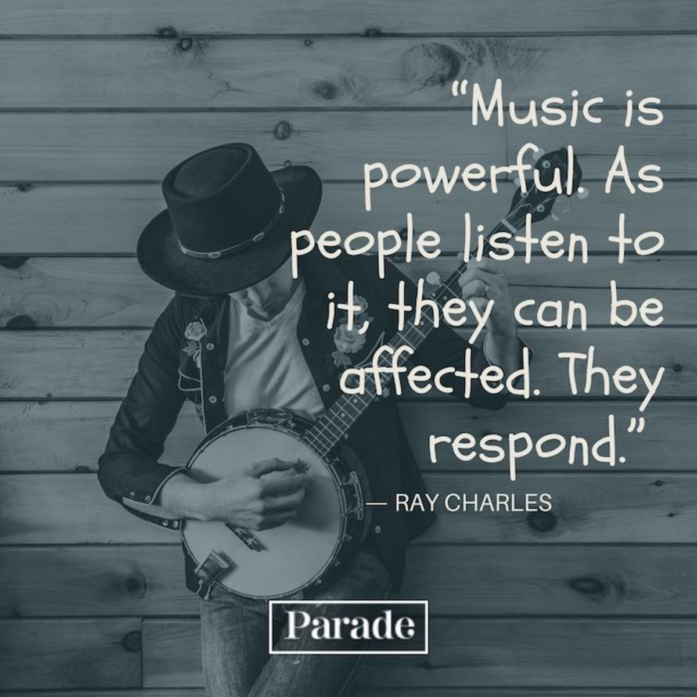

music is art concerned with combining vocal or instrumental sounds for beauty of form or emotional expression, usually according to cultural standards of rhythm, melody, and, in most Western music, harmony. Both the simple folk song and the complex electronic composition belong to the same activity, music. Both are humanly engineered; both are conceptual and auditory, and these factors have been present in music of all styles and in all periods of history, throughout the world. Music is an art that, in one guise or another, permeates every human society. Modern music is heard in a bewildering profusion of styles, many of them contemporary, others engendered in past eras. Music is a protean art; it lends itself easily to alliances with words, as in song, and with physical movement, as in dance. Throughout history, music has been an important adjunct to ritual and drama and has been credited with the capacity to reflect and influence human emotion. Popular culture has consistently exploited these possibilities, most conspicuously today by means of radio, film, television, musical theatre, and the Internet. The implications of the uses of music in psychotherapy, geriatrics, and advertising testify to a faith in its power to affect human behaviour. Publications and recordings have effectively internationalized music in its most significant, as well as its most trivial, manifestations. Beyond all this, the teaching of music in primary and secondary schools has now attained virtually worldwide acceptance. But the prevalence of music is nothing new, and its human importance has often been acknowledged. What seems curious is that, despite the universality of the art, no one until recent times has argued for its necessity. The ancient Greek philosopher Democritus explicitly denied any fundamental need for music: “For it was not necessity that separated it off, but it arose from the existing superfluity.” The view that music and the other arts are mere graces is still widespread, although the growth of psychological understanding of play and other symbolic activities has begun to weaken this tenacious belief. Music is treated in a number of articles. For the history of music in different regions, see African music; Oceanic music and dance; Western music; Central Asian arts: Music; Chinese music; Japanese music; Korean music; Islamic arts; Native American music; South Asian arts: Music